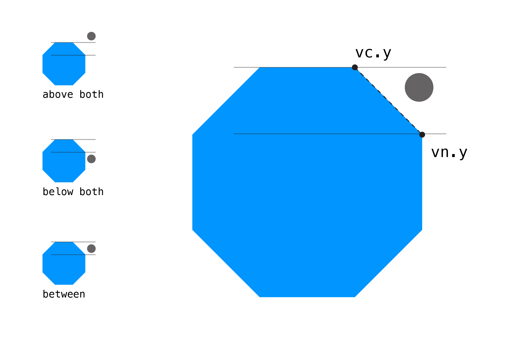

Круги та прямокутники чудово підходять для більшості базових перевірок, а обмежувальні рамки й кола часто використовують як спрощену оболонку навколо складних об’єктів. Та бувають завдання, де потрібна ювелірна точність для фігур довільної форми. Саме тут на сцену виходять багатокутники (їх також часто називають полігонами, від англ. polygon).
У цьому розділі ми розберемо, як перевірити, чи лежить точка всередині будь-якого багатокутника. Геометрично багатокутник задається списком вузлових точок із координатами x/y, які називаються вершинами (vertices), а відрізки, що послідовно з’єднують сусідні вершини, — його ребрами або сторонами.
Для зберігання вершин ми використаємо масив об’єктів p5.Vector. Кожен такий вектор зручно тримає в собі пару координат x та y і надає готові методи для векторної математики. Якщо ви раніше не працювали з p5.Vector, радимо зазирнути в розділ про вектори в онлайн-книзі «Природа коду».
Створимо масив vertices і запишимо в нього чотири вершини за допомогою функції createVector(x, y). У нашому прикладі це чотирикутник-трапеція, але ви можете створити фігури з будь-якою кількістю вершин, хоч з сотнею:
const vertices = [];
vertices[0] = createVector(200, 100);
vertices[1] = createVector(400, 130);
vertices[2] = createVector(350, 300);
vertices[3] = createVector(250, 300);Також створимо булеву змінну-прапорець для відстеження стану зіткнення:
let isCollision = false;Тепер нам потрібно пройтися всіма ребрами багатокутника. Кожне ребро — це відрізок, що з’єднує поточну вершину під індексом current із наступною вершиною під індексом next. Але з чим з’єднується найостанніша вершина масиву? Звісно ж, із найпершою (під індексом 0), щоб контур багатокутника замкнувся!
let next = 0;
for (let current = 0; current < vertices.length; current++) {
// індекс наступної вершини у списку
next = current + 1;
// якщо ми дійшли до кінця масиву, замикаємо контур на першу вершину (індекс 0)
if (next === vertices.length) {
next = 0;
}
// дістаємо вектори поточної та наступної вершин, що утворюють ребро
const currVertex = vertices[current];
const nextVertex = vertices[next];
}Як зрозуміти, чи точка (px, py) опинилася всередині складного багатокутника? Для цього використовується знаменитий алгоритм трасування променя (Ray Casting), що спирається на топологічну теорему Жордана.
Уявіть, що ви стоїте в точці (px, py) посеред парку химерної форми, обгородженого парканом, і світите лазерною указкою горизонтально праворуч — далеко за межі парку. Щоразу, коли промінь перетинає паркан (ребро багатокутника), він переходить із внутрішньої території назовні або ззовні всередину:
Саме тому для кожного ребра, яке перетинає наш горизонтальний промінь, ми перемикаємо значення isCollision на протилежне:
if (
((currVertex.y >= py && nextVertex.y < py) || (currVertex.y < py && nextVertex.y >= py)) &&
(px < (nextVertex.x - currVertex.x) * (py - currVertex.y) / (nextVertex.y - currVertex.y) + currVertex.x)
) {
isCollision = !isCollision;
}Розберімо цю велику умову на дві зрозумілі частини:
Частина 1: чи лежить точка за висотою y
між кінцями ребра?
Горизонтальний промінь на висоті py може
перетнути ребро лише тоді, коли одна вершина ребра лежить вище за
py, а інша — нижче:
(currVertex.y >= py && nextVertex.y < py) || (currVertex.y < py && nextVertex.y >= py)

До речі: цю саму перевірку в коді інколи записують ще коротше: (currVertex.y > py) !== (nextVertex.y > py). Вона повертає true лише тоді, коли два порівняння дають різний результат (одна вершина вище за точку, а інша — нижче).
Частина 2: чи проходить ребро праворуч від точки?
Друга частина умови за допомогою пропорції знаходить точну координату
x на похилому ребрі на висоті
py і перевіряє, чи наша точка
px розташована лівіше від цього ребра:
px < (nextVertex.x - currVertex.x) * (py - currVertex.y) / (nextVertex.y - currVertex.y) + currVertex.xЯкщо обидві частини істинні — промінь, випущений із точки праворуч, перетинає це ребро, і ми інвертуємо прапорець: isCollision = !isCollision;. Коли цикл обійде всі сторони багатокутника, у змінній isCollision залишиться точна відповідь!
Ось повний код прикладу:
// координати рухомої точки
let px = 0;
let py = 0;
// масив векторів вершин багатокутника
const vertices = [];
function setup() {
createCanvas(window.innerWidth, window.innerHeight);
strokeWeight(15); // збільшена товщина точки для кращої видимості
noCursor();
// задаємо вершини багатокутника (трапеція)
vertices[0] = createVector(width / 2 - 100, height / 2 - 100);
vertices[1] = createVector(width / 2 + 100, height / 2 - 100);
vertices[2] = createVector(width / 2 + 50, height / 2 + 100);
vertices[3] = createVector(width / 2 - 50, height / 2 + 100);
}
function draw() {
background(255);
// оновлюємо координати точки положенням курсора
px = mouseX;
py = mouseY;
// перевіряємо, чи точка всередині багатокутника
const isColliding = collidePolyPoint(vertices, px, py);
// змінюємо колір багатокутника при зіткненні
if (isColliding) {
fill(255, 150, 0);
} else {
fill(0, 150, 255);
}
// малюємо багатокутник за його вершинами
noStroke();
beginShape();
for (const v of vertices) {
vertex(v.x, v.y);
}
endShape(CLOSE);
// малюємо рухому точку
stroke(0, 150);
point(px, py);
}
// перевірка на зіткнення між багатокутником та точкою
function collidePolyPoint(vertices, px, py) {
let isCollision = false;
// перебираємо всі ребра багатокутника
let next = 0;
for (let current = 0; current < vertices.length; current++) {
next = current + 1;
if (next === vertices.length) {
next = 0;
}
const currVertex = vertices[current];
const nextVertex = vertices[next];
// якщо горизонтальний промінь від точки праворуч перетинає поточне ребро,
// інвертуємо прапорець isCollision
if (
((currVertex.y >= py && nextVertex.y < py) || (currVertex.y < py && nextVertex.y >= py)) &&
(px < (nextVertex.x - currVertex.x) * (py - currVertex.y) / (nextVertex.y - currVertex.y) + currVertex.x)
) {
isCollision = !isCollision;
}
}
return isCollision;
}Найбільша перевага цієї функції полягає в тому, що вона працює з багатокутниками будь-якої складності — навіть з увігнутими фігурами чи зірками! Проте пам’ятайте про швидкодію: що більше вершин має фігура, то більше кроків циклу виконується в кожному кадрі. У великих іграх спочатку виконують швидку перевірку через обмежувальне коло або прямокутний хітбокс, і лише коли об’єкти підійшли впритул — запускають точну перевірку багатокутника.
Реалізація цього алгоритму базується на відповіді авторів nirg та Pranav на StackOverflow.
Далі: Багатокутник і Круг